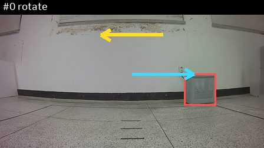

아래 트랙에서 빨간색 타깃을 좌우로 마우스 드래그해 보세요. 타깃 중심($c_x$)과 거리에 따라 모델과 M3 전문가가 어떻게 모드를 전환하고 조향각을 보정하는지 실시간으로 반응합니다.
(<0.20)
(>0.80)
코드(scripts/gap_suite.py, scripts/gap_e1.py)와 연구 스토리(CH79)에 등장하는 핵심 수식과 제어 용어들을 실제 로봇 하드웨어 및 데이터셋 출처를 기반으로 정리한 사전입니다.
카메라 정중앙(cx=0.5)에서 타깃이 벗어난 오차에 비례해 로봇 머리를 타깃 쪽으로 틀어주는 비례 제어(Proportional Control) 값입니다. 예를 들어 cx=0.67(우측 편향)이면 sy = 2×(0.17) = +0.34가 되어 목표 각도 약 +19.9° 우측 조향 명령을 계산합니다.
scripts/gap_suite.py:93 (expert_live)
신경망(VLA) 모델의 실기 성능을 평가하기 위해 정의한 이상적인 기하학적 제어기(Oracle)입니다. 사람 조작 데이터가 없는 실기 프레임에서 "이 상황이라면 로봇이 어떻게 움직여야 정답인가"를 판정하는 기준(Ground Truth) 역할을 합니다.
scripts/gap_suite.py:88-100 (expert_live)
- Mode 0 (STOP): 면적 ≥ 0.25 (목표 도달 충돌 방지 정지)
- Mode 2 (SPIN): |cx - 0.5| > 0.30 (타깃이 시야 밖으로 벗어나 제자리 회전 정렬)
- Mode 1 (MOVE): 타깃이 중앙에 있고 아직 미도달 상태 (전진 추적)
scripts/gap_suite.py:63-71 (mode_of & gt_mode)
동일한 이미지에서 타깃 박스를 강제로 좌/우 64px(±0.2) 옮겼을 때 모델이 타깃을 쫓아 방향을 꺾는 각도입니다. 양수(+)여야 로봇이 타깃이 치우쳤을 때 스스로 되돌아오는 복원력을 갖춥니다. (기존 -0.7° 둔감 → 증강 후 +0.34°)
scripts/gap_suite.py:117-123 (split_metrics)
• lx: 전진 속도 (0.0 ~ 1.15)
• ly: 횡방향 속도 (ly < 0이면 로봇이 우측으로 게걸음 이동 → 타깃 cx는 증가)
• az: 회전 각속도. 주의: 이 로봇은 +az = 우회전(시계), -az = 좌회전(반시계)입니다.
docs/v5/research_story.html#ch79 용어 표
• SYNC: 1회 추론 명령 후 0.4초간 구동하고 즉시 정지한 뒤 다음 응답을 대기 (스텝당 약 1.55초 소요, 안전 점검용)
• ASYNC: 다음 서버 추론 응답이 올 때까지 직전 명령을 유지하며 멈춤 없이 부드럽게 연속 주행
docs/v5/egvla2_fm/filmstrips.json 메타데이터